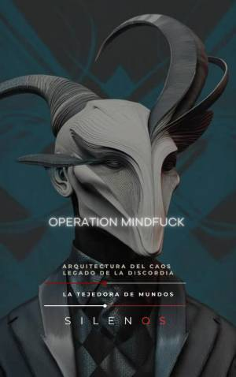

Illuminati
OPERATION MINDFUCK: Arquitectura del Caos y el Legado de la Discordia
Sinopsis
¿Es la realidad una construcción sólida o un elaborado truco de espejos? OPERATION MINDFUCK: Arquitectura del Caos y el Legado de la Discordia es un viaje fascinante a las profundidades de uno de los movimientos contraculturales más enigmáticos y transformadores del siglo XX: el Discordianismo. Lo que comenzó como una broma entre dos amigos en una bolera de California en 1956, terminó por hackear la cultura occidental, influyendo en todo, desde la ética hacker hasta los mitos urbanos sobre los Illuminati. ¿Qué descubrirás en este libro? El Nacimiento del Caos: La historia real de Kerry Thornley y Gregory Hill, los "sumos sacerdotes" que recibieron la visión de Eris, la diosa de la confusión, y decidieron que el mundo necesitaba menos dogmas y más risas. Operation Mindfuck (OM): Explora la guerrilla semántica que utilizó la desinformación creativa, las cartas al editor y los "atentados poéticos" para desestabilizar la normalidad y obligar a la gente a pensar por sí misma. La Conexión JFK y los Illuminati: Descubre el papel de Thornley en el enigma de Dallas, su relación con Lee Harvey Oswald y cómo Robert Anton Wilson utilizó la ficción para deconstruir la realidad a través de la mítica Trilogía Illuminatus!. De la Contracultura a la Era Digital: Un análisis de cómo los memes, el arte postal y la ética hacker primitiva sentaron las bases de nuestra actual cultura en red. Pedagogía de la Duda: Aprende por qué la risa es la mejor medicina contra las "verdades petrificadas" y cómo la libertad cognitiva es esencial en un mundo dominado por algoritmos. ¿Por qué leer este libro hoy? En una era de fake news, desinformación industrializada y crisis de las grandes narrativas, las herramientas de la Operation Mindfuck son más relevantes que nunca. Este libro no solo narra una historia de rebelión intelectual; es un manual para aprender a navegar el caos con humor, ética y responsabilidad comunitaria. Atrévete a cuestionar tus certezas. Desarma las máscaras del orden y el desorden. Mantén la lasagna volando. Ideal para entusiastas de la contracultura, estudiosos de las teorías de conspiración, hackers, artistas y cualquier persona interesada en los mecanismos que dan forma a nuestra realidad.